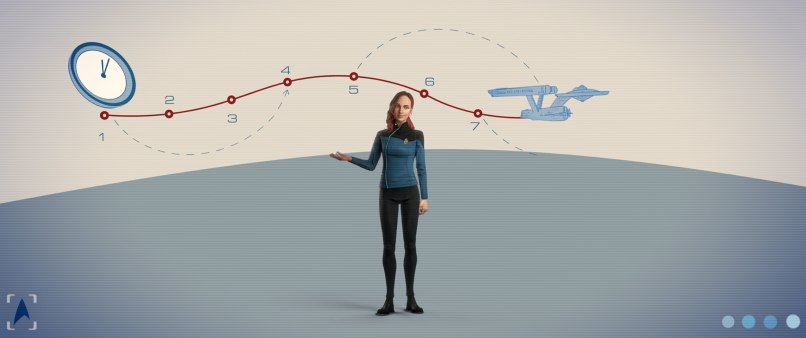

@c6reviews.
@c6reviews.
🚨 This page contains spoilers 🚨
| The timeline of Star Trek: Prodigy can get a little confusing. Let's see if we can clear things up a little bit with this chart. Or maybe this will just make it even more confusing! | ||||||||
|
||||||||
| Universe Timeline Go to full timeline ➡︎ | |||||||
|---|---|---|---|---|---|---|---|
| 2362 | ⭐ Start Below |
||||||
| 2363 | ↓ | The Diviner and his Drednok arrive in their past | |||||
| 2364 | ↓ | ||||||
| 2365 | ↓ | The unmanned Protostar arrives in its past by 2365 or before | |||||
| 2366 | ↓ | and is deep within Tars Lamora by 2366 | The Diviner creates his progeny, Gwyndala ❰ PRO 1x06: Kobayashi (flashback) |
||||
| 2367 | ↓ | ||||||
| 2368 | ↓ | ||||||
| 2369 | ↓ | ||||||
| 2370 | ↓ | ||||||
| 2371 | ↓ | STAR TREK VOYAGER |
|||||
| 2372 | ↓ | ||||||
| 2373 | ↓ | Fractured Timeline | |||||
| 2374 | ↓ | Chakotay returns with the Protostar from the future and maroons himself on Ysida | |||||
| 2375 | ↓ | ||||||
| 2376 | ↓ | ||||||
| 2377 | ↓ | ||||||
| 2378 | ↓ | ||||||
| 2379 | ⭐START HERE⭐ | ||||||
| 2380 | ⬇⬇⬇ | ||||||
| 2381 | Alternate Original Timeline | The Vindicator and her Drednok arrive in their past | |||||
| 2382 | Captain Chakotay and the USS Protostar are accidentally thrown into the future | ||||||
| 2383 | SERIES PREMIERE Dal finds the Protostar on Tars Lamora PRO 1x01: Lost and Found |
||||||
| 2384 | Dal & crew destroy the Protostar to save Starfleet PRO 1x20: Supernova, Part 2 |
Dal & crew take the Infinity into the anomaly to the future PRO 2x02: Into the Breach, Part II |
Dal & crew return from the future PRO 2x04: Temporal Mechanics 101 |
Dal & crew help Chakotay get the Protostar flying again PRO 2x12: Last Flight of the Protostar, Part II |
|||
| 2385 | (2385 or 2386) The Federation makes first contact with the Vau N'Akat, plunging them into civil war | The gang sends the Protostar back to Tars Lamora, closing the time loop PRO 2x20: Ouroboros, Part II |
Rogue Synth Attack on Mars PRO 2x20: Ouroboros, Part II |
||||
| 2386 | |||||||
| 2387 | |||||||
| 2388 | |||||||
| 2389 | |||||||
| 2390 | |||||||
| 2391 | |||||||
| 2392 | |||||||
| 2393 | |||||||
| 2394 | |||||||
| 2395 | |||||||
| 2396 | |||||||
| 2397 | |||||||
| 2398 | |||||||
| 2399 | |||||||
| 2400 | |||||||
| 2401 | |||||||
| 2402 | |||||||
| 2403 | |||||||
| 2404 | |||||||
| 2405 | |||||||
| 2406 | |||||||
| 2407 | |||||||
| 2408 | |||||||
| 2409 | |||||||
| 2410 | |||||||
| 2411 | |||||||
| 2412 | |||||||
| 2413 | |||||||
| 2414 | |||||||
| 2415 | |||||||
| 2416 | |||||||
| 2417 | |||||||
| 2418 | |||||||
| 2419 | |||||||
| 2420 | |||||||
| 2421 | |||||||
| 2422 | |||||||
| 2423 | |||||||
| 2424 | |||||||
| 2425 | |||||||
| 2426 | |||||||
| 2427 | |||||||
| 2428 | |||||||
| 2429 | |||||||
| 2430 | |||||||
| 2431 | |||||||
| 2432 | |||||||
| 2433 | |||||||
| 2434 | |||||||
| 2435 | |||||||
| 2436 | Chakotay arrives in the future, is held prisoner for months, and then stays behind while sending the Protostar back in time ❰ PRO 1x16: Preludes (flashback) |
The Diviner, The Vindicator, and their Drednoks go back in time after the Protostar ❰ PRO 1x16: Preludes (flashback) |
Dal & crew arrive in the future. This time, Chakotay is on board the Protostar when it enters the anomaly to go back in time ❱❱ PRO 2x03: Who Saves the Saviors |
Dal & crew rig the Infinity to return to their own time ❱❱ PRO 2x04: Temporal Mechanics 101 |
|||
| 2437 | |||||||
| 2438 | |||||||